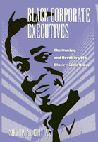

A revealing study of the promising entry of Blacks into managerial ranks in corporations and the disappointing trend that tracked them into increasingly vulnerable jobs
A revealing study of the promising entry of Blacks into managerial ranks in corporations and the disappointing trend that tracked them into increasingly vulnerable jobs


 A revealing study of the promising entry of Blacks into managerial ranks in corporations and the disappointing trend that tracked them into increasingly vulnerable jobs
A revealing study of the promising entry of Blacks into managerial ranks in corporations and the disappointing trend that tracked them into increasingly vulnerable jobs

|  |
Black Corporate ExecutivesThe Making and Breaking of a Black Middle ClassSharon M. Collinspaper EAN: 978-1-56639-474-1 (ISBN: 1-56639-474-0) |
"Collins-Lowry gives persuasive examples of how employment gains made by Blacks in the 80's were rather more marginalized than we like to think."
—Publishers Weekly
Against the backdrop of increasing ambivalence in the federal government commitment to race-based employment policies, this book reveals how African-Americans first broke into professional and managerial jobs in corporations during the sixties and offers in-depth profiles of their subsequent career experiences.
Two sets of interviews with the most successful Black executives in Chicago's major corporations are used to demonstrate how the creation of the Black business elite is connected to federal government pressures and black social unrest that characterized the civil Rights movement in the sixties.
Black Corporate Executives presents, first hand, the dilemmas and contradictions that face this first wave of Black managers and reveals a subtle new employment discrimination. Corporations hired these executives in response to race-conscious political pressures and shifted them into "racialized" positions directing affirmative action programs or serving "special" markets of minority clients, customers, or urban affairs. Many executives became, as one man said, "the head Black in charge of Black people." These positions gave upper-middle-class lifestyles to those who held them but also siphoned these executives out of mainstream paths to corporate power typically leading through planning and production areas. As the political climate has become more conservative and the economy undergoes restructuring, these Black executives believe that the importance of recruiting Blacks has waned and that the jobs Blacks hold are vulnerable.
Collins-Lowry's analysis challenges arguments that justify dismantling affirmative action. She argues that it is a myth to believe that Black occupational attainments are evidence that race no longer matters in the middle-class employment arena. On the contrary, Blacks' progress and well-being are tied to politics and employment practices that are sensitive to race.
Excerpt available at www.temple.edu/tempress
"For a revealing history of how African Americans broke into a professional and managerial corporate jobs during the 19960s, one need go no further than the book Black Corporate Executives.... A largely academic work, Collins' book explores the foundation of affirmative action and equal opportunity programs, which provided avenues through which blacks could succeed."
—Black Enterprise
"Black Corporate Executives is very well written in a style that makes it easily accessible to the educated public. Because it is grounded in carefully collected data that is skillfully analyzed, the study is also important to the sociological community. It makes a solid contribution the literature and should be a welcome addition to a wide variety of academic curses in business and in the social sciences."
—The American Journal of Sociology
"...add[s] significantly to the literature on race and economics. More importantly, [this book is] a window into the diversity of ways in which black Americans carve out a degree of economic stability."
—Contemporary Sociology
Tables and Figures
Preface
Acknowledgments
1. The Controversy over Race and Class
2. A Politically Mediated Opportunity Structure
3. Racialized Services in the Workplace
4. Tan Territories, Urban Upheaval, and the New Black Professionals
5. Race Tracks and Mainstream Careers
6. Peacekeepers, Crisis Managers, and Conciliators
7. Blacks on the Bubble
8. A Rash of Pessimism
9. Bursting the Bubble: The Failure of Black Progress
Notes
References
Index
 | Sharon M. Collins teaches Sociology at the University of Illinois, in Chicago. |
African American Studies
Labor Studies and Work
Sociology
Labor and Social Change, edited by Paula Rayman and Carmen Sirianni.
Labor and Social Change, edited by Paula Rayman and Carmen Sirianni, includes books on workplace issues like worker participation, quality of work life, shorter hours, technological change, and productivity, as well as union and community organizing and ethnographies of particular occupations.
© 2015 Temple University. All Rights Reserved. This page: http://www.temple.edu/tempress/titles/1277_reg.html.